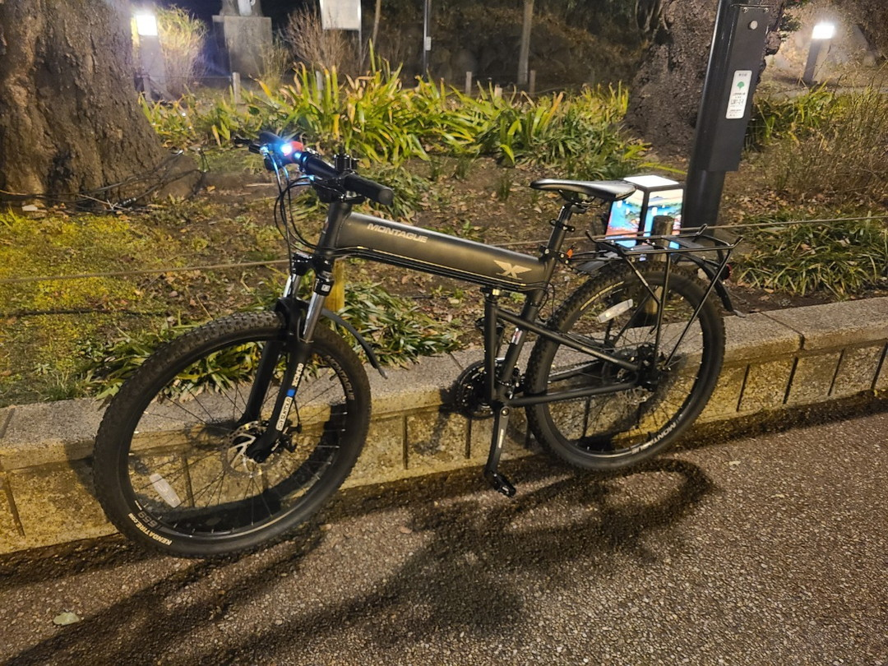
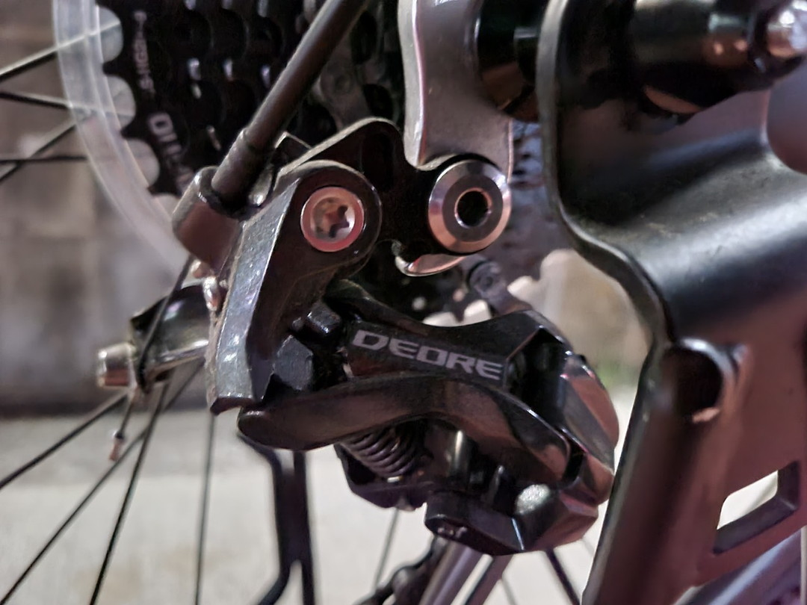
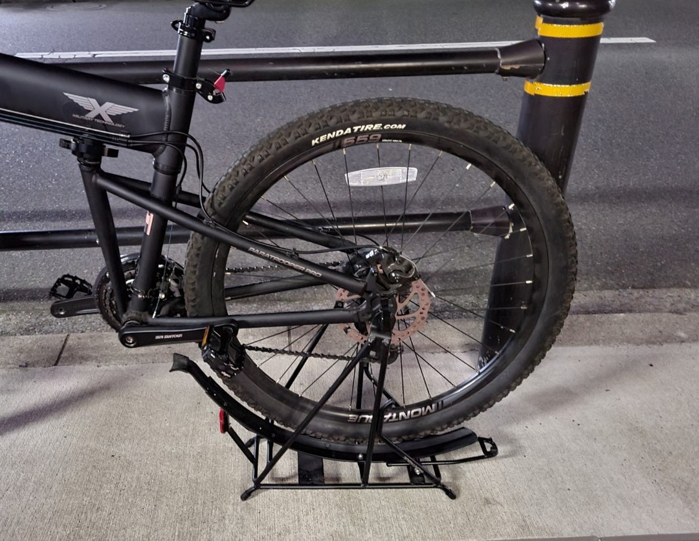
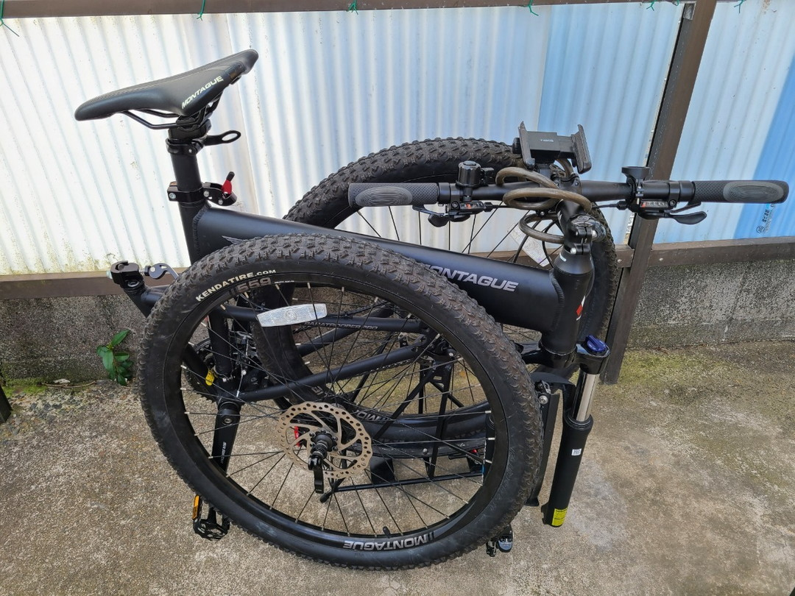
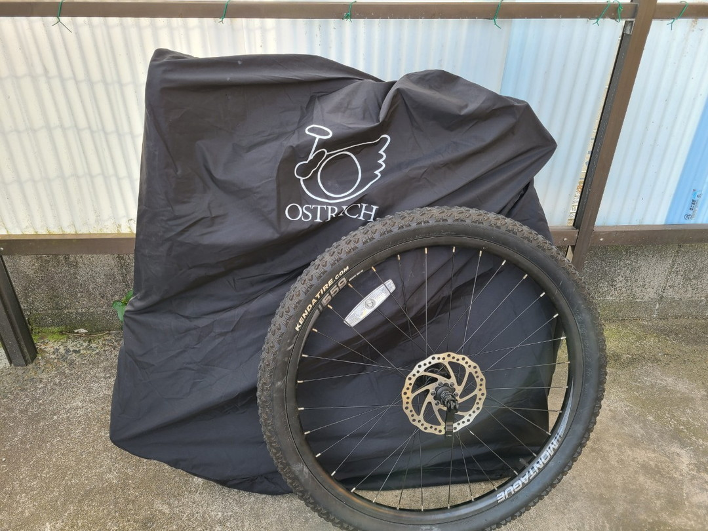
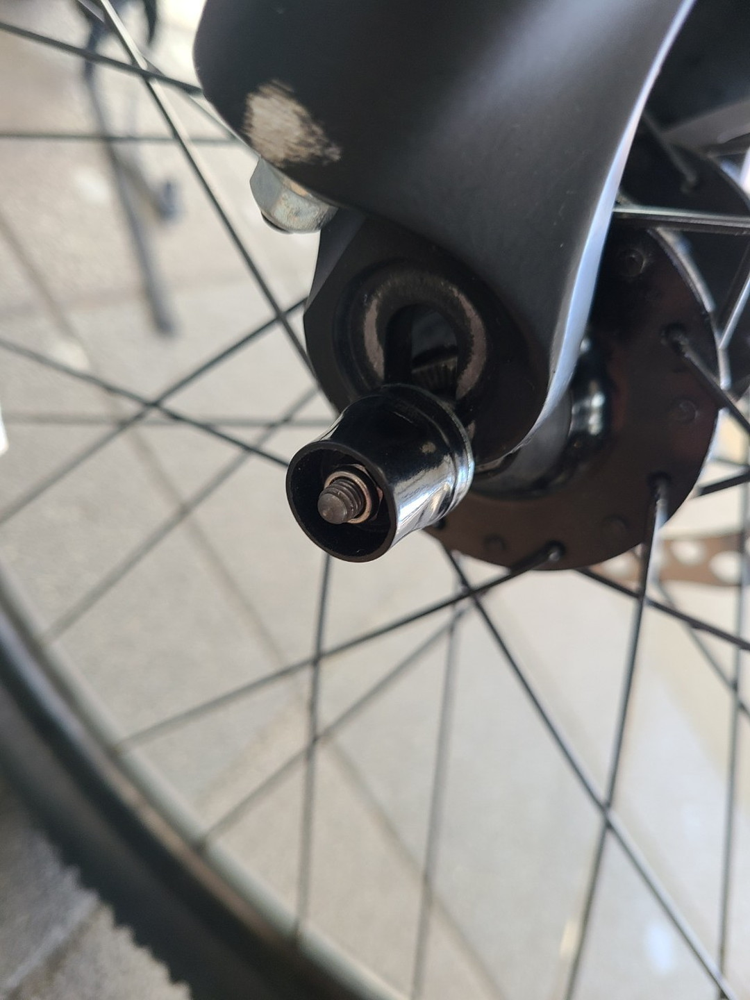
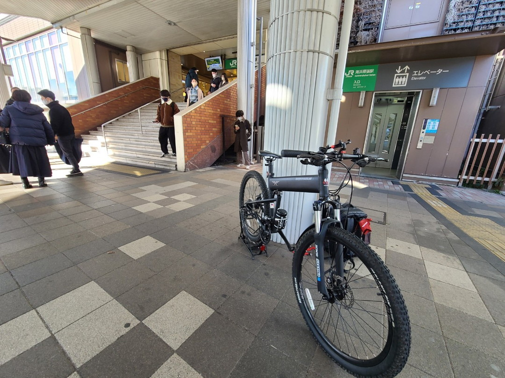
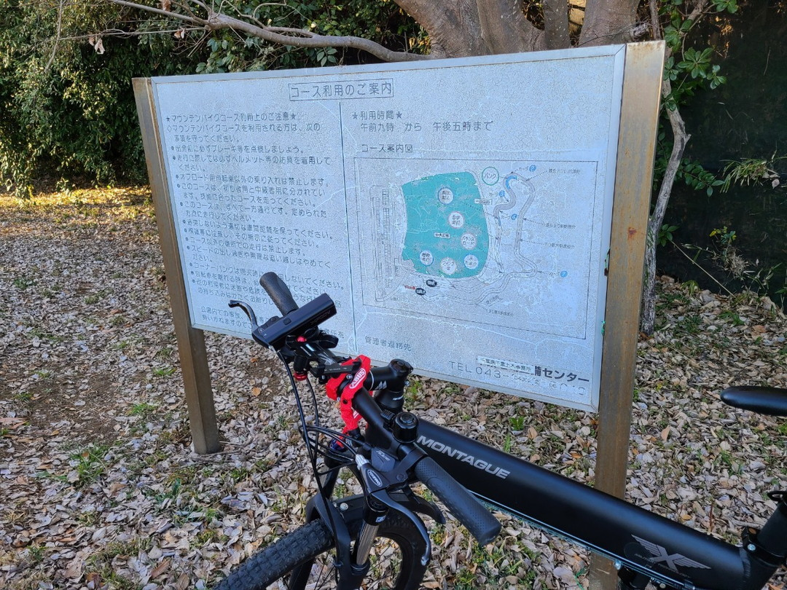
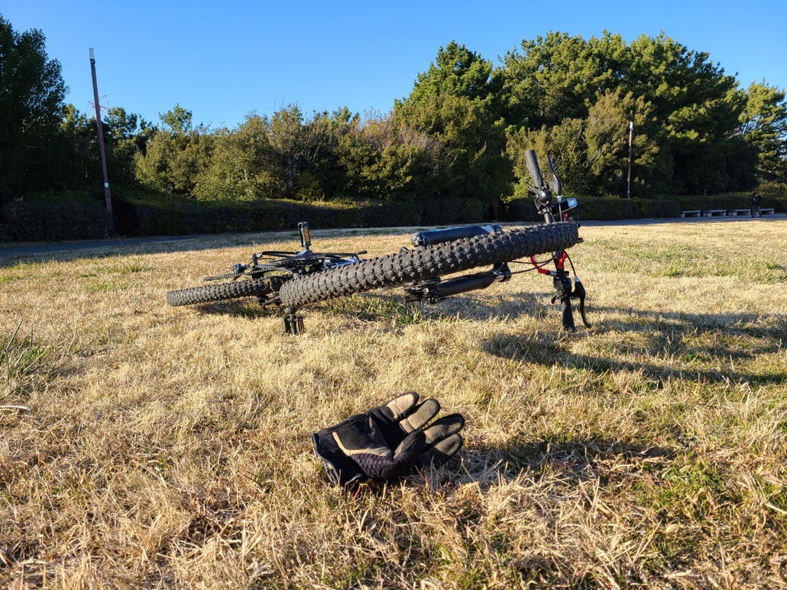

投稿日2023-03-02
満を持して購入

買いたい。買いたいと思ってついに買ってしまった。あの米軍空挺部隊が正式採用しているという,Montague社から発売されている文字通りパラトルーパーというフルサイズ折り畳みMTB。フィギュア化もされてるくらい知名度は先行しているのにも関わらず日本語記事があまりないので１ヶ月程度乗った感想とか備忘録とか書きまとめておく。
基本性能

今回私が買ったのはParatropperのPro、無印よりちょっと高級なモデル。ほかにも色々なラインナップがあるけれどもマニア的には無印のカラーが一番ウケがいいのかな？
大まかな違いはこちらの自転車屋さんが紹介してくれているので省略。
実は新品ではなく状態のいい中古品を手に入れたので現行のモデルとはちょっとコンポとかが違う。一応調べたところ2019年モデルだと思われる。
以下見た目からわかったスペック表
| Paratrooper pro | 2019 |
|---|---|
| フォーク | SR SUNTOUR XCM30 100mm(ヒルクライムNG) | ステム | 長95mm |
| タイヤ | Kenda SLANT SIX 26x1.95 |
| ホイール | 26インチ(559)32h リアo.l.d135mm |
| ブレーキ | Tektro ARIES メカニカルディスク |
| Fシフター | Alivio3s | Rシフター | Alivio9s | FD | Shimano Acera 3s |
| RD | Shimano Deore RD-M592 9s |
| ペダル | WELLGO アルミペダル | クランク | SR Suntour XCM. 44/32/22. Alloy 170mm crank arm. Black. BCD104mm | スプロケット | Shimano CS-HG200-9 11-32T | リアキャリア最大積載重量 | 25kg |
あと購入したサイズは20インチ(タイヤじゃなくて車体)。筆者は身長165cmのアンダー人権ラインなので16,18インチが適正だが20インチがやすかったから仕方ない。どれだけオフセットできるか試してやろうと思う。
特徴的なリアキャリア

付属のリアキャリアはなんとスタンド代わりに利用ができる。メンテ台替わりにも使えるのでなかなか使い勝手が良い。
もちろん積載をしたらスタンドとしては使えない。街乗りのときにお荷物になるのを回避するための合理的な設計だろう。
この構造面白いのでミニベロ版も欲しいなぁなどと思ったりした。
最初の試練
状態のいい中古とはいえ調節がずれていたので一度部屋でメンテする必要があった。
実は初のMTB,ディスクブレーキなので恐る恐るやっていた。だがディスクブレーキはなんてことなかった。メカニカルはVブレーキと似たような感覚で触れたし、本体の六角穴を回すことでブレーキパッドの間隔を調整できるという非常に優れモノだった。
一番の敵はよく見知っていたFDの調整だった。大抵の入門クロスバイクに取り付けられている３速変速。一体今時誰がこんなん使うんだ？時代はフロントシングルですよ！せめてダブルにしてほしいなどと思いつつ、幾億年ぶりかのフロントトリプルの変速調整を行った。
これ本当に久しぶりすぎて時間がかかった。どうせ早いうちにFD外そうと思っているので虚無虚無プリン。100年ぶりくらいにフロントトリプルの変速調整した pic.twitter.com/lmUMmE7zep
— わくせい・わほい (@ADlGCrQjlnyDKCg) February 9, 2023
ちなみに調整後は真ん中しか使ってない。3x9で27速とかほんと詐欺にもほどがあるからもうやめにしませんか。
折り畳みテスト

なにはともあれ調整も終わったのでメインである輪行と走行を試してみた。
とりあえず部屋の隅にあったオーストリッチの700c輪行袋なら入るだろう……と思ったが難しかった。

単なる両輪外しに比べて幅があるらしく、試行錯誤の結果どうにか入ったがフロントホイールを後から入れたりしないといけない。新しい袋はただいま詮索中。
考えてみればアメリカに電車輪行袋なんて概念はあまりなさそうなので仕方ない話ではある。それでもディスク車の両輪外し輪行に比べると格段に楽だろう。

もう一つの問題はクイックリリースだ。普通のQRより強度を持たせるためにレバーの反対側がナット締めされている。どうやら説明書によると串差しのままホイールを持ち上げてはずす、つけるときも同様にするらしい。……がこれが結構難しい。なんせったってブレーキをディスクに通すためにホイールとフォークの水平を維持したまま斜めにずらすという行為が必要だからだ。めんどくさいのでフレームを上下逆にして付け外しするのが無難か。
……スキュワー化すればよくね？輪行時は工具も持ち歩くだろうし。などと思ってしまった。
走行テスト


さて、輪行に関しては不満が残るものの、市街地、河原のあぜ道、海浜幕張にあるMTBコースを走ったりなどしたがまあ楽しい。車体が16kgくらいあるのにわりとぐいぐい進む、何よりサスペンションがあるので段差をあまり気にしなくていいのが精神衛生上いい。これはロードタイヤ履かせて街乗りにしても腐らないかもしれない。今度千葉県内の林道行ってみたいなぁ。その前にタイヤをコンチネンタルに変えようかなどといけないことばかり考えてしまう。
総括

このパラトルーパーはステータスをフレームに振ってるのでコンポを見ると弱く見える。正直15万でRD9s,メカニカルブレーキ…うーん。もちろんメカニカルのほうが輪行に有利だからそこはいいんだけど……。
全体的にトレンドに追いついていない。リアエンド幅が135mmというのもディスクブレーキの中では旧規格になってきている。（ただシマノのCUESとかいう新コンポで復活の兆しがある）26インチのホイールもそう。今のMTBは650B(27.5)や29erなど更に大きなホイールを履かせている。ただ、650B仕様のParatropper Highlineもある。こっちはFD2s,RD10sと比較的新しい構成になっているが、現在20万する。正直ディスクブレーキ車だから650B化くらいやろうと思えばできるのでわざわざ買うのかというとどうなんでしょう。カラバリが１色しかないしなぁ……。などと思うが唯一無二のフレーム、やはりこれが強い。これさえあればこっちのもんだ。ちなみにＡｌｉに旧バージョンの車体だけ売ってるのでオレノルーパーを作ろうかと考えてもいた。
バニラ状態でのインプレッションは書いたから、さてどう改造してやろうか。……ではまた～。（気が向いたら続く）